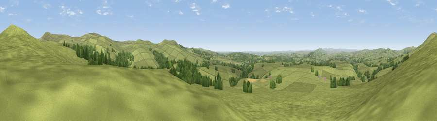

Viewpoint near Walkhampton
#6099 in England · top 11% of its area beats it · near WalkhamptonThe view, rendered

A 360° render of this exact spot computed from the terrain model, tree cover and land cover — summer colours, afternoon light, calibrated against photographs of famous viewpoints. Real trees, hedges and buildings will differ in detail.
The panorama
Grey silhouette: terrain skyline in each direction (720 bearings, Earth curvature and refraction included). Dashed green: skyline with trees (+15 m) and buildings (+8 m) as obstacles. Blue strip: how far the ground is visible on each bearing.
Where the view opens
Wedge length = distance to the farthest visible ground on that bearing (vegetation-aware). Rings at 10, 25 and 50 km.
What fills the view
89% grassland · 10% woodland · 1% cropland
Angular shares of the visible panorama (visual magnitude), not map area. Landscape diversity 0.18 (0–1 Shannon).
Key numbers
More beautiful places nearby
The staircase of upgrades: each row has a higher view potential than everything closer. Driving times are estimates from straight-line distance, calibrated against real road routing — check an actual route before setting out.
| Place | Direction | Drive | Score |
|---|---|---|---|
| Pew Tor | N · 0 km | ~1 min | 71.7 |
| Cox Tor | N · 3 km | ~7 min | 75.9 |
| Sharpitor | SE · 4 km | ~9 min | 77.4 |
| Viewpoint near Dousland | SE · 4 km | ~9 min | 81.0 |
| Viewpoint near Lee Moor | SSE · 11 km | ~20 min | 82.7 |
| Viewpoint near Downderry | SW · 27 km | ~44 min | 83.5 |
| Viewpoint near Hope | SSE · 37 km | ~56 min | 84.4 |
| Viewpoint near East Prawle | SE · 44 km | ~64 min | 84.6 |
50.53986, -4.07339 · source: screening · position refined by local search. Computed location — check access rights before visiting.